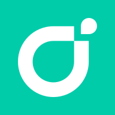
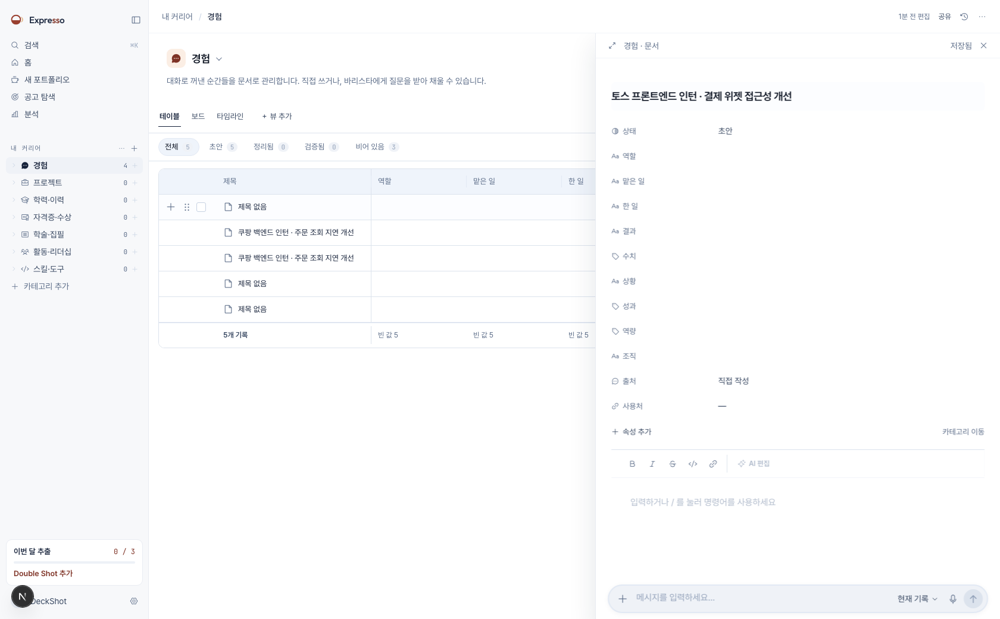

커리어 기록 기반 채용 공고 맞춤 포트폴리오 생성 서비스
공고가 요구하는 것과 사용자가 실제로 한 일을 먼저 잇고, 그 근거 안에서만 포트폴리오를 만듭니다.
목차
프로젝트 제안 개요
- 기획 배경
- 문제 정의
- 아이디어 소개
- 벤치마킹 사례와 한계
- 기존 서비스와의 차별점
- 기대 효과
- 비즈니스 모델
프로젝트 개발 내용
- 개발 목표
- 시스템 구성
- 서비스 시나리오
- 사용자 기능 · 운영 기능
- AI 모델 구성
- 채용 공고 추천 모델
- 커리어 기록 추천 모델
- 학습 데이터 수집과 구성
- 평가 지표와 배포 기준
- 구현 현황
프로젝트 개발 전략
- 개발팀 구성 및 역할
- 개발 일정 및 계획
- CI / CD 파이프라인
- 기술 스택
개발 성과 및 평가
- 개발 산출물
- 기대 성과
- 남은 과제
Ⅰ. 프로젝트 제안 개요
만드는 이유와 기존 서비스와의 차이
기획 배경 — 지원 서류 작성 부담
- 공고마다 같은 경험을 다시 정리하는 반복 작업
- 선택 항목이 사실상 필수로 인식 — 45.8%
- 공고가 요구하지 않은 항목까지 작성
기획 배경 — 생성형 AI 확산과 신뢰
- 2024년 하반기 제출량이 상반기의 3배 이상
- 금융권 지원자의 사용 비율이 업종별 최다
- 겪은 사례 — SNS 운영 경험이 없는 지원자의 자기소개서에 블로그 운영 경험 삽입
- AI 이력서 도구 리뷰 — 경력에 과장 · 부정확한 내용 추가 보고
아이디어 소개
기록에서 공개 포트폴리오까지
기록
경력 · 프로젝트 · 학력 · 활동을 구조화해 축적
공고 분석
공고 원문에서 요구사항과 조건 추출
근거 선택
요구사항마다 뒷받침하는 기록 연결
생성
연결된 근거 안에서만 문장과 지면 생성
배포 · 분석
공개 주소 발급과 방문 지표 집계
벤치마킹 사례와 한계
겹치는 축이 서로 다른 서비스
원티드 에이전트
자연어 조건으로 포지션을 추천하고, 지원 포지션에 맞춰 이력서를 분석해 개선점을 제안합니다.
이력서 문장까지
포트폴리오 지면 생성과 공개 배포가 없습니다. 개선 제안의 근거가 사용자 기록이 아니라 합격 사례 샘플입니다.

rallit.com랠릿
개발자 프로필과 이력서를 작성하고 테마를 골라 링크로 공유합니다. 직군 · 경력 · 기술 스택으로 공고를 검색합니다.
선택은 사용자 몫
템플릿이 형태를 주지만 어떤 경험을 앞세울지는 사용자가 판단합니다. 공고와 프로필이 이어지지 않습니다.
Rezi · Teal
공고를 붙여넣으면 필수 키워드를 제안하고 지원자 추적 시스템 호환을 맞춥니다.
키워드 일치
공고 용어를 맞출 뿐 그 문장이 실제 경험에서 나왔는지 확인하지 않습니다. 국내 공고와 한국어를 다루지 않습니다.
기존 서비스와의 차별점
| 항목 | 원티드 에이전트 | 랠릿 | Rezi · Teal | Expresso |
|---|---|---|---|---|
| 커리어 기록 축적 | 이력서 단위 | 프로필 단위 | 이력서 단위 | 기록 단위 구조화 |
| 공고 요구사항 추출 | 포지션 추천 | 필터 검색 | 키워드 추출 | 요구사항 단위 추출 |
| 생성 근거 검증 | 합격 샘플 기준 | 없음 | 없음 | 기록 인용 필수 |
| 포트폴리오 지면 생성 | 없음 | 템플릿 선택 | 이력서 문서 | 지면 생성 |
| 배포와 방문 분석 | 없음 | 링크 공유 | 파일 내려받기 | 공개 사이트 · 방문 지표 |
기대 효과
반복 작업 축소
한 번 쌓은 기록을 공고마다 다시 정리하지 않고, 공고에 맞는 근거만 골라 씁니다.
근거 있는 문장
모든 문장이 사용자 기록의 어느 항목에서 나왔는지 되짚을 수 있습니다. 인용이 없는 항목은 저장되지 않습니다.
방문 데이터 활용
어느 섹션이 오래 읽혔는지 집계해 다음 포트폴리오의 구성 근거로 씁니다.
비즈니스 모델
- 커리어 기록 관리 전체
- 월 생성 횟수 제한
- 기본 주소로 공개 배포
- 방문 지표 기본 항목
- 생성 횟수 확대
- 커스텀 도메인 연결
- 섹션 단위 방문 분석과 개선 제안
- 포트폴리오 보관 개수 확대
Ⅱ. 프로젝트 개발 내용
기능 범위 · 시스템 구성 · 추천 모델
개발 목표
색이 들어간 자리를 규칙 기반에서 학습 모델로 교체합니다. 나머지는 이미 동작하는 범위입니다.
13시스템 구성
요청·응답 타입은 계약의 스키마에서 파생합니다. 계약을 어기면 화면이 그 자리에서 멈춥니다.
14서비스 시나리오
- 제작 요청은 즉시 반환 — 창을 닫아도 계속 진행
- 모델은 순위와 근거 위치를 계산
- 문장 생성은 그 근거 안에서만 실행
- 실선은 요청, 점선은 응답
사용자 기능
커리어 기록 관리
경력 · 프로젝트 · 학력 · 자격 · 활동을 카테고리별로 저장하고, 목록 · 표 · 보드 · 갤러리로 탐색합니다.
공고 탐색과 분석
공고를 찾거나 직접 가져오고, 원문에서 필수 · 우대 요건과 근무 조건을 추출합니다.
포트폴리오 제작
재료를 고르고 부족한 정보는 대화로 채운 뒤, 레시피를 확정해 문장과 지면을 생성하고 편집합니다.
배포와 방문 분석
주소를 발급해 버전 단위로 배포하고, 섹션별 읽기 패턴을 집계해 개선 지점을 제시합니다.
운영 기능
공고 수집 운영
출처별 어댑터를 정해진 시각에 실행하고, 수집 결과와 실패 사유를 출처 단위로 기록합니다.
스키마와 마이그레이션
스키마 변경을 마이그레이션으로 따로 실행합니다. 서비스가 뜰 때 스키마를 바꾸지 않습니다.
실행 모드 전환
외부 LLM 호출을 끄고 규칙 기반 구현으로 돌릴 수 있습니다. 기본값은 꺼짐입니다.
배포와 관측
병합 시 자동 배포하고, 준비 상태 점검으로 인프라 연결을 확인합니다.
AI 모델 구성
공통 표현 모델과 추천 모델의 관계
채용 공고 추천 모델
프로필 표현 집계에서 최종 순위까지
- 공고 텍스트 — 제목 · 업무 · 필수 · 우대 요건 · 기술
- 공고 구조 — 직군 · 요구 연차 · 산업 · 게시 · 마감 시점
- 커리어 기록 전체와 기간 · 카테고리 · 최신성
- 명시적 선호 — 목표 직무 · 근무 형태 · 지역
- rankScore — 공고 순위 계산값
- fitBand — 보정된 적합 구간
- evidenceRecordIds — 근거가 된 기록
- requirementIds — 관련 요건 · confidence · 모델 버전
원시 순위 점수는 내부 값입니다. 사람 라벨로 확률 보정을 마친 모델만 화면에 적합도를 표시합니다.
19커리어 기록 추천 모델
요건별 근거 연결과 중복을 줄이는 조합 선택
- 채용 공고의 요건 목록과 원문 위치
- 사용자의 기록 목록과 근거 문장
- 기록 문맥 — 기간 · 상태 · 출처 · 검증 상태
- relevanceScore — 기록 관련도
- marginalCoverageGain — 새로 덮는 요건의 양
- redundancyScore — 선택 기록 간 중복
- evidenceSpans — 근거 문장 위치
- selectedRank — confidence · 모델 버전
근거 문장 위치가 비면 그 항목은 저장하지 않습니다. 생성 단계가 인용할 원문이 없기 때문입니다.
20학습 데이터 수집과 구성
| 데이터 | 만드는 방법 | 역할 |
|---|---|---|
| 채용 공고 | 공공 채용정보 · 채용 관리 시스템 공개 목록 수집 | 실제 직무 · 요건 분포 |
| 합성 커리어 프로필 | 직무 · 연차 · 기술 구조를 정한 뒤 LLM 생성 | 희소 사례 범위 확장 |
| LLM 교사 라벨 | 후보를 함께 제시해 순위와 동률 판정 | 순위 · 근거 위치 |
| 사람 라벨 | 교사 결과를 가린 상태에서 독립 검수 후 합의 | 교사 신뢰도 · 최종 시험 |
| 제품 행동 | 노출 · 조회 · 저장 · 지원 · 기록 선택 기록 | 운영 이후 개인화 |
- 실제 사람이 작성한 기록으로 구성한 봉인 시험셋이 배포 여부를 결정
- 생성 모델 · 프롬프트 버전 · 수정 내역을 데이터셋에 기록
- 이름 · 성별 · 나이 · 국적 · 학교 서열은 추천 피처에서 제외
- 제외한 항목은 한 개씩 바꿔 순위 변화를 보는 공정성 감사셋에 사용
평가 지표와 배포 기준
| 평가 대상 | 지표 |
|---|---|
| 공고 검색 | Recall@50 · NDCG@10 · MAP |
| 기록 선택 | Precision@8 · 요건 커버리지@8 · 중복도 |
| 근거 | span Precision · Recall · F1 |
| 신뢰도 | Brier score · ECE |
| 공정성 · 운영 | 반사실 순위 변화 · p95 지연 |
- 기준선 고정 — 현재 제품의 문자열 포함 · 토큰 중첩 규칙
- 같은 시험 데이터에서 규칙 기반 · BM25 · LightGBM · 고정 임베딩 · 학습 임베딩 비교
- 실제 기록 시험셋의 품질 · 공정성 · 신뢰도 · 지연 기준을 모두 통과한 버전만 배포 후보
기준선을 웃도는 지표와 함께 오류 사례를 남깁니다. 개선 폭이 작으면 다음 단계의 기본 모델에서 제외합니다.
22구현 현황

제품 주소 expresso.ai.kr · 개발 포털 dev.expresso.ai.kr
23Ⅲ. 프로젝트 개발 전략
팀 역할 · 15주 일정 · 개발 환경
개발팀 구성 및 역할
일정 · 화면 · 모델
도메인 경계와 일정 관리 · 제작 흐름 화면 · 추천 모델 학습
기록과 계정
커리어 기록 모듈 · 계정과 사용량 · 기록 검색
공고 수집과 분석
출처별 어댑터 · 공고 정규화 · 요건 추출
제작과 배포
재료 선정부터 생성까지의 작업 큐 · 공개 사이트 배포
데이터셋과 평가
합성 프로필 생성 · 교사 라벨 · 봉인 시험셋과 지표
개발 일정 및 계획
각 단계는 앞선 기준선을 웃도는 지표와 오류 사례를 함께 남깁니다.
26CI / CD 파이프라인
푸시에서 배포까지의 검증 단계
푸시
브랜치 작업과 풀 리퀘스트 등록
계약 · 스키마 빌드
공유 계약과 데이터 스키마를 먼저 컴파일
검증
마이그레이션 · 타입 검사 · 테스트 · 통합 테스트
병합
기본 브랜치 병합으로 배포 실행
배포 · 확인
배포 스크립트 실행과 준비 상태 점검


기술 스택
서버 · 화면 · 데이터 · 학습 스택


Node.js · TypeScript · Fastify로 API를 세우고, 작업 큐로 오래 걸리는 생성을 백그라운드에서 실행합니다.

Next.js App Router로 앱 화면과 공개 포트폴리오를 함께 서빙합니다. 색과 크기는 토큰 한 곳에서 옵니다.

MongoDB에 기록과 공고를 두고, Redis가 작업 큐와 캐시를 맡습니다.


공개 인코더를 출발점으로 표현 모델을 학습하고, 외부 LLM은 합성 데이터와 설명 생성에만 씁니다.
인코더 후보 — KURE · BGE-M3 · Qwen3 Embedding. 같은 시험 데이터에서 비교해 정합니다.
28Ⅳ. 개발 성과 및 평가
학기 산출물과 남은 위험
개발 산출물
서비스
- 커리어 기록부터 배포까지 동작하는 웹 서비스
- 채용 공고 추천 모델 · 커리어 기록 추천 모델
- 사용자가 배포한 공개 포트폴리오 사이트
데이터셋
- 합성 커리어 프로필과 생성 이력
- LLM 교사 라벨과 사람 검수 라벨
- 실제 기록으로 구성한 봉인 시험셋
산출 문서
- 제안서 · 설계서 · 완료 보고서
- 모델 평가 리포트와 오류 사례
- 개발 포털의 명세 · 아키텍처 문서
기대 성과
- 공고 검색 — 규칙 기반 기준선 대비 NDCG@10 향상
- 기록 선택 — 같은 개수에서 요건 커버리지 증가와 중복 감소
- 근거 — 판정에 쓴 원문 위치의 정확도 확보
- 제작 흐름 전체가 실제 사용자 기록으로 끝까지 진행
- 생성 문장마다 인용한 기록을 되짚을 수 있음
- 제품 응답 시간 안에서 모델 실행
- 민감 속성을 한 항목씩 바꿔도 순위가 흔들리지 않음
- 직군별 최저 성능이 기준선 아래로 내려가지 않음
목표 수치는 기준선을 재현한 뒤 확정합니다. 지금 숫자를 적으면 근거 없는 값이 됩니다.
31남은 과제
실제 기록 확보
합성 프로필은 학습 범위를 넓히지만 실제 행동을 그대로 재현하지 못합니다. 봉인 시험셋에 넣을 실제 기록을 모으는 경로가 필요합니다.
공고 수집 경로
출처마다 이용 조건과 제공 범위가 다릅니다. 공식 API · 제휴 · 사용자 입력 중 무엇으로 확보할지 정해야 학습 데이터 규모가 정해집니다.
모델 서빙 비용
인코더 후보마다 서빙 메모리와 지연이 다릅니다. 품질이 좋아도 응답 시간 안에 들어오지 않으면 배포 후보에서 제외합니다.
막힌 것부터 물어보십시오. 오늘 답하지 못한 것은 적어서 설계서에 반영합니다.